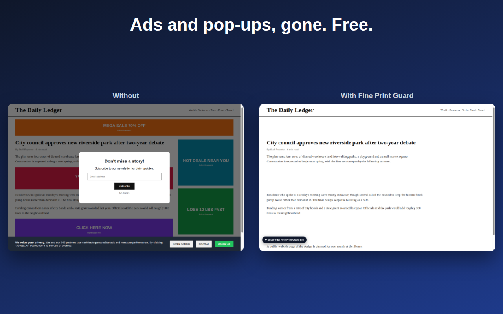
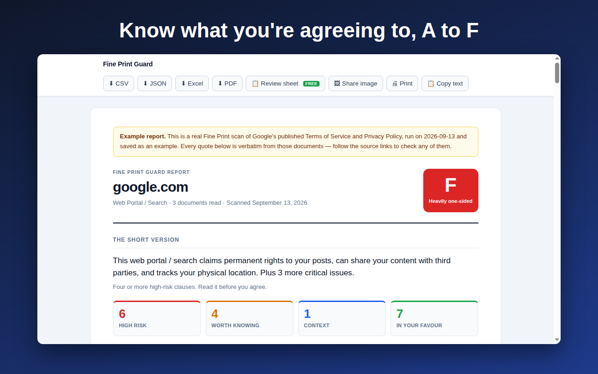
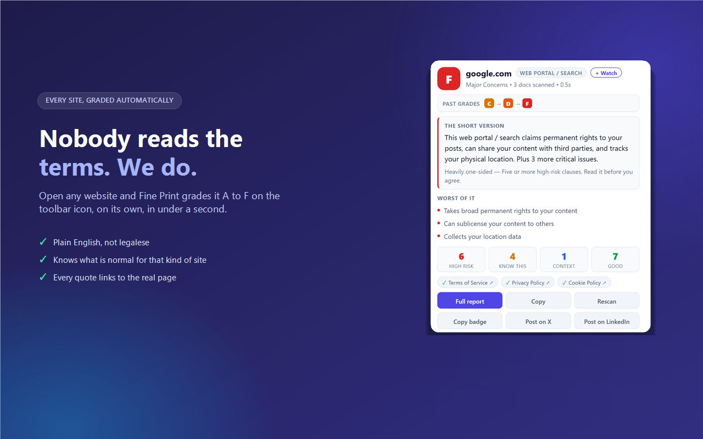
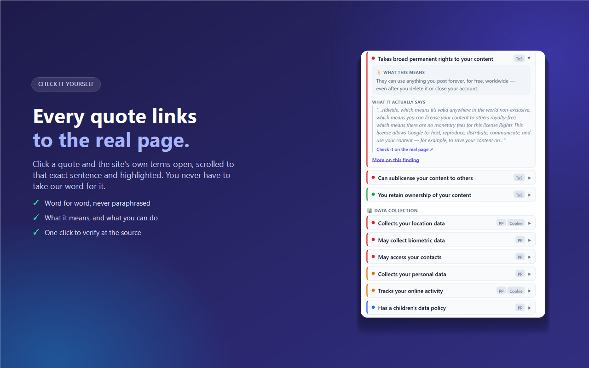
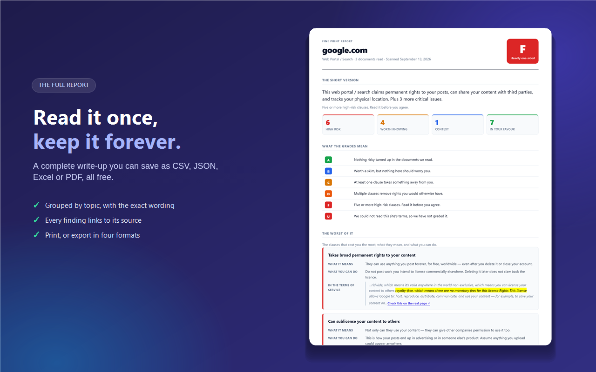
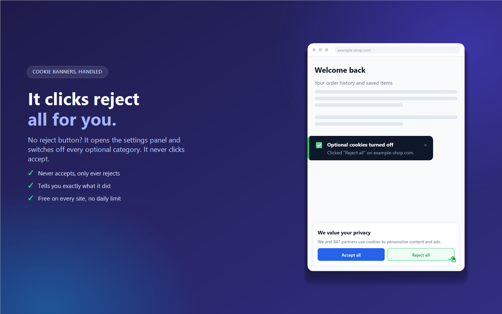
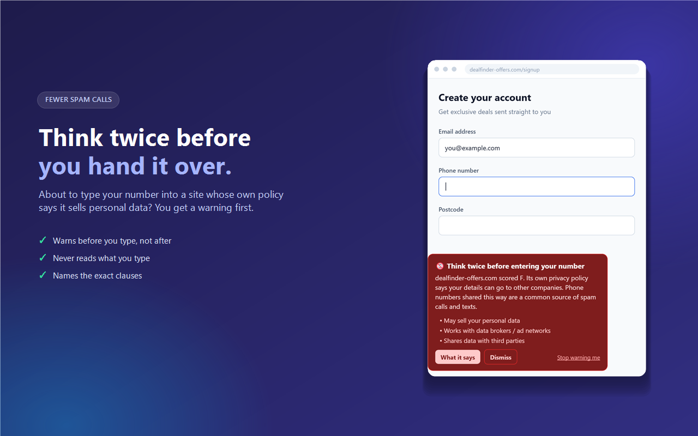

Fine Print Guard
Fine Print GuardA free ad blocker that also reads the fine print
Blocks ads, pop-ups, trackers and cookie banners in Chrome. Then it grades every site's terms of service A to F, so you know what you're agreeing to.
Add to Chrome, it's free
What it blocks
Ads and trackers
Nearly 1,000 known ad, analytics and data-broker domains, plus ad scripts a site loads from its own domain.
Pop-ups and pop-unders
The ad tab that opens when you click anywhere. Windows you open on purpose, like sign-ins and card checks, still work.
Cookie banners
Clicks "Reject all" for you, or switches every optional category off. It never clicks Accept.
Boxes that cover the page
Newsletter sign-ups, "download our app" prompts and surveys. Press Alt+Shift+X to bring one back.
Sticky clutter
Bars stuck to the edge of the screen, floating corner videos and tabs that make noise on their own.
"Turn off your ad blocker" walls
The message and countdown go away and the page scrolls again.
Know what you're agreeing to
Nobody reads the terms. Fine Print Guard does, on your computer, and puts a grade on its icon for every site. It flags selling your data, taking rights to your photos and posts, training AI on what you type, and forced arbitration. Every finding links to the exact sentence, so you can check it yourself.

See it in action





Questions
Is it free?
Yes. Every feature is free. There is no account, no paid plan and nothing to unlock.
Does it accept cookies for me?
No. It clicks "Reject all" or switches optional categories off. It has no code that clicks Accept.
Does it send my browsing anywhere?
No. Pages are read on your computer and there is no Fine Print Guard server. The only outside service is anonymous usage stats (which features are used, never which sites), and you can turn them off.
Will it break sign-in pages?
No. Google, Microsoft and other sign-in pages are left alone, and you can pause blocking on any site in one click.
Is the grade legal advice?
No. It flags wording it recognises and can miss things, which is why every finding links to the real sentence.